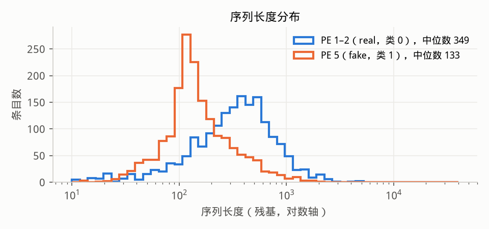
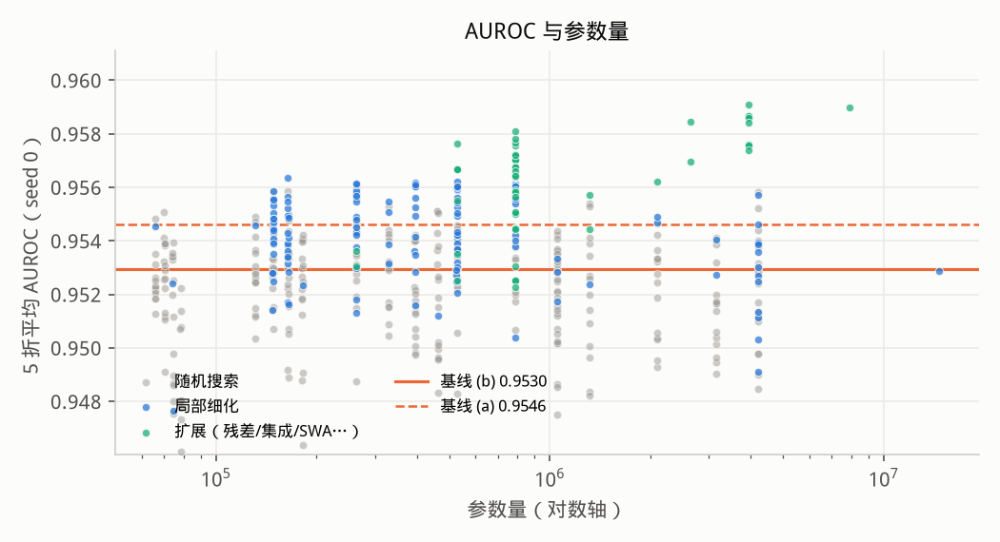
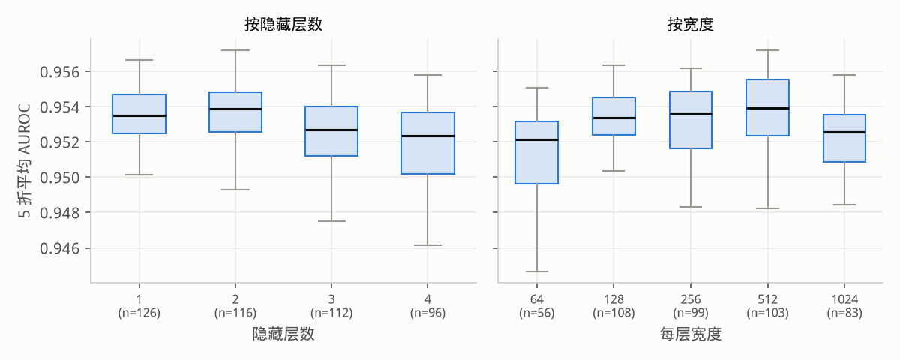
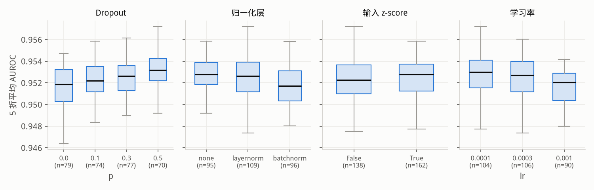
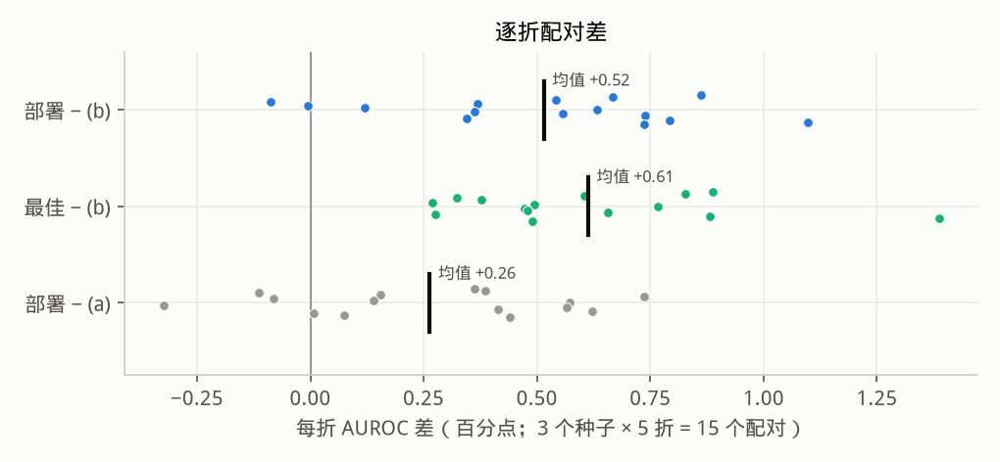
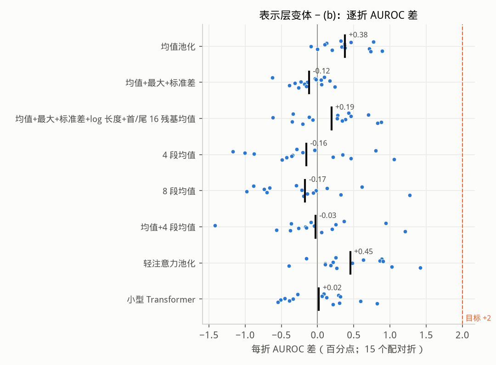

由 scripts/mlp_experiments/make_report.py 根据 results.jsonl（759 条运行记录）自动生成。
正例：Swiss-Prot 全部 PE=5 条目 1730 条（类 1，"fake"）；负例：从 175,908 条 PE 1–2 中以固定种子 20261106
均匀抽取 1730 条（类 0，"real"）。共 3460 条，MMseqs2 easy-cluster --min-seq-id 0.3 -c 0.8 --cov-mode 0
得到 3113 个簇，簇作为分组。评估：StratifiedGroupKFold 5 折（同簇不跨折）；每折训练集再按簇切出 1/8 作内层验证集，
用于早停与 C 选择，测试折从不参与任何选择。嵌入：仓库 ProteinPEClassifier.embed（ProtT5 半精度，1024 残基分块的长度加权均值，GPU）。
| 折 | 测试 | 其中 PE5 | 其中 PE1–2 | 内层训练 | 内层验证 |
|---|---|---|---|---|---|
| 1 | 693 | 347 | 346 | 2421 | 346 |
| 2 | 691 | 345 | 346 | 2423 | 346 |
| 3 | 692 | 346 | 346 | 2422 | 346 |
| 4 | 692 | 346 | 346 | 2422 | 346 |
| 5 | 692 | 346 | 346 | 2422 | 346 |

| 基线 | 设置 | 参数量 | AUROC | AUPRC | Accuracy | Balanced acc. | MCC | F1 |
|---|---|---|---|---|---|---|---|---|
| (a) 仓库默认 | Linear(1024,256)-ReLU-Dropout0.1-Linear；Adam lr 1e-3，bs 2，3 epoch，无早停，全训练集 | 262,914 | 0.9546 ± 0.0029 | 0.9607 ± 0.0037 | 0.8971 ± 0.0107 | 0.8971 ± 0.0107 | 0.7950 ± 0.0211 | 0.8956 ± 0.0112 |
| (b) 同结构合理训练 | 同结构；Adam lr 1e-3，bs 64，≤100 epoch，内层验证 AUROC 早停（patience 15） | 262,914 | 0.9530 ± 0.0043 | 0.9575 ± 0.0064 | 0.8925 ± 0.0118 | 0.8925 ± 0.0118 | 0.7874 ± 0.0217 | 0.8884 ± 0.0143 |
| (c) 逻辑回归 | LogisticRegression（z-score，C 由内层验证选） | 1,025 | 0.9524 ± 0.0032 | 0.9564 ± 0.0051 | 0.8919 ± 0.0097 | 0.8919 ± 0.0097 | 0.7883 ± 0.0179 | 0.8860 ± 0.0116 |
| (b+) 同结构调参 | 同结构，仅调 lr/wd/输入 z-score（12 组中最佳）：隐藏层 [256]，dropout 0.1，norm none，relu，lr 0.0001，wd 0.01，bs 64，adamw，输入 z-score，最多 100 epoch，patience 15 | 262,914 | 0.9560 ± 0.0027 | 0.9609 ± 0.0008 | 0.8957 ± 0.0117 | 0.8957 ± 0.0117 | 0.7947 ± 0.0218 | 0.8907 ± 0.0136 |
共 513 个配置（随机 300，细化 150，扩展 63），均为 seed 0 的 5 折 CV。 随机空间：层数 {1,2,3,4} × 宽度 {64…1024} × dropout {0,0.1,0.3,0.5} × norm {none,LN,BN} × {ReLU,GELU} × lr {1e-4,3e-4,1e-3} × wd {0,1e-4,1e-2} × bs {32,64,128} × label smoothing {0,0.1} × 输入 z-score，AdamW，早停 patience 15。



箱线图只含随机/细化（效应图只含随机搜索）运行，每点是一个配置的 5 折均值；散点图中集成的参数量按 k 个头累计。注意 seed 0 上的 top-1 带有选择偏差，见第 4 节的多种子复验。
| # | 阶段 | 配置 | 参数量 | AUROC | Accuracy | MCC |
|---|---|---|---|---|---|---|
| 1 | widen | 隐藏层 [512, 512]，dropout 0.5，norm layernorm，gelu，lr 0.0001，wd 0，bs 32，adamw，5 种子集成，最多 6 epoch，无早停 | 3,952,650 | 0.9591 ± 0.0025 | 0.8997 ± 0.0087 | 0.801 ± 0.017 |
| 2 | widen | 隐藏层 [512, 512]，dropout 0.5，norm layernorm，gelu，lr 0.0001，wd 0，bs 32，adamw，10 种子集成，最多 6 epoch，无早停 | 7,905,300 | 0.9590 ± 0.0024 | 0.8983 ± 0.0085 | 0.798 ± 0.017 |
| 3 | widen | 隐藏层 [512, 512]，dropout 0.5，norm layernorm，gelu，lr 0.0001，wd 0.001，bs 32，adamw，5 种子集成，早停后全量重训，最多 100 epoch，patience 20 | 3,952,650 | 0.9587 ± 0.0028 | 0.9017 ± 0.0074 | 0.805 ± 0.014 |
| 4 | widen | 隐藏层 [512, 512]，dropout 0.5，norm layernorm，gelu，lr 0.0001，wd 0，bs 32，adamw，5 种子集成，早停后全量重训，最多 100 epoch，patience 15 | 3,952,650 | 0.9587 ± 0.0028 | 0.9017 ± 0.0074 | 0.805 ± 0.014 |
| 5 | widen | 隐藏层 [512, 512]，dropout 0.5，norm layernorm，gelu，lr 0.0001，wd 0，bs 32，adamw，5 种子集成，早停后全量重训，最多 100 epoch，patience 20 | 3,952,650 | 0.9587 ± 0.0028 | 0.9017 ± 0.0074 | 0.805 ± 0.014 |
| 6 | widen | 隐藏层 [512, 512]，dropout 0.5，norm layernorm，gelu，lr 0.0001，wd 0.1，bs 32，adamw，5 种子集成，早停后全量重训，最多 100 epoch，patience 20 | 3,952,650 | 0.9586 ± 0.0029 | 0.9017 ± 0.0074 | 0.805 ± 0.014 |
| 7 | widen | 隐藏层 [512]，dropout 0.3，norm layernorm，gelu，lr 0.0003，wd 0.01，bs 128，adamw，5 种子集成，早停后全量重训，最多 100 epoch，patience 20 | 2,634,250 | 0.9585 ± 0.0025 | 0.8974 ± 0.0091 | 0.797 ± 0.018 |
| 8 | widen | 隐藏层 [512, 512]，dropout 0.5，norm layernorm，relu，lr 0.0001，wd 0，bs 32，adamw，input dropout 0.2，5 种子集成，早停后全量重训，最多 100 epoch，patience 20 | 3,952,650 | 0.9584 ± 0.0023 | 0.9012 ± 0.0101 | 0.804 ± 0.021 |
| 9 | widen | 隐藏层 [512, 512]，dropout 0.5，norm layernorm，gelu，lr 0.0001，wd 0，bs 32，adamw，最多 8 epoch，无早停 | 790,530 | 0.9581 ± 0.0014 | 0.9000 ± 0.0074 | 0.801 ± 0.015 |
| 10 | widen | 隐藏层 [512, 512]，dropout 0.5，norm layernorm，gelu，lr 0.0001，wd 0，bs 32，adamw，label smoothing 0.1，最多 6 epoch，无早停 | 790,530 | 0.9578 ± 0.0016 | 0.8965 ± 0.0098 | 0.795 ± 0.019 |
种子 s ∈ {0,1,2} 同时改变 CV 划分（StratifiedGroupKFold 的 random_state）与模型初始化/打乱；同一种子下所有配置用同一划分，因此可逐折配对比较。 下表只列出跑满 3 个种子的配置（seed 0 的前若干名 + 基线 + 扩展变体），按 15 折平均 AUROC 排序；ΔAUROC 为相对 (b) 的逐折配对差均值（百分点）。
| 配置 | 设置 | 参数量 | AUROC s0 / s1 / s2 | AUROC（15 折） | ΔAUROC vs (b) | 胜出折 | Accuracy（15 折） | MCC（15 折） |
|---|---|---|---|---|---|---|---|---|
| 最佳 T1_fixed6_ens10 | 隐藏层 [512, 512]，dropout 0.5，norm layernorm，gelu，lr 0.0001，wd 0，bs 32，adamw，10 种子集成，最多 6 epoch，无早停 | 7,905,300 | 0.9590 / 0.9560 / 0.9564 | 0.9571 ± 0.0050 | +0.61 | 15/15 | 0.8979 ± 0.0115 | 0.798 ± 0.023 |
| top6_ens5_refit | 隐藏层 [512]，dropout 0.3，norm layernorm，gelu，lr 0.0003，wd 0.01，bs 128，adamw，5 种子集成，早停后全量重训，最多 100 epoch，patience 20 | 2,634,250 | 0.9585 / 0.9555 / 0.9562 | 0.9567 ± 0.0046 | +0.57 | 15/15 | 0.8958 ± 0.0118 | 0.793 ± 0.024 |
| T1_fixed6_ens5 | 隐藏层 [512, 512]，dropout 0.5，norm layernorm，gelu，lr 0.0001，wd 0，bs 32，adamw，5 种子集成，最多 6 epoch，无早停 | 3,952,650 | 0.9591 / 0.9554 / 0.9556 | 0.9567 ± 0.0049 | +0.57 | 15/15 | 0.8991 ± 0.0091 | 0.800 ± 0.018 |
| top1_ens5_refit | 隐藏层 [512, 512]，dropout 0.5，norm layernorm，gelu，lr 0.0001，wd 0.001，bs 32，adamw，5 种子集成，早停后全量重训，最多 100 epoch，patience 20 | 3,952,650 | 0.9587 / 0.9553 / 0.9560 | 0.9567 ± 0.0042 | +0.57 | 15/15 | 0.8984 ± 0.0092 | 0.799 ± 0.018 |
| 部署 T1_fixed6 | 隐藏层 [512, 512]，dropout 0.5，norm layernorm，gelu，lr 0.0001，wd 0，bs 32，adamw，最多 6 epoch，无早停 | 790,530 | 0.9577 / 0.9543 / 0.9564 | 0.9561 ± 0.0045 | +0.52 | 13/15 | 0.8935 ± 0.0110 | 0.790 ± 0.021 |
| T1_fixed6_ls0.1 | 隐藏层 [512, 512]，dropout 0.5，norm layernorm，gelu，lr 0.0001，wd 0，bs 32，adamw，label smoothing 0.1，最多 6 epoch，无早停 | 790,530 | 0.9578 / 0.9541 / 0.9562 | 0.9560 ± 0.0047 | +0.50 | 13/15 | 0.8957 ± 0.0114 | 0.793 ± 0.022 |
| top6_refit | 隐藏层 [512]，dropout 0.3，norm layernorm，gelu，lr 0.0003，wd 0.01，bs 128，adamw，早停后全量重训，最多 100 epoch，patience 20 | 526,850 | 0.9576 / 0.9541 / 0.9549 | 0.9556 ± 0.0053 | +0.46 | 14/15 | 0.8945 ± 0.0102 | 0.791 ± 0.020 |
| T1_fixed8 | 隐藏层 [512, 512]，dropout 0.5，norm layernorm，gelu，lr 0.0001，wd 0，bs 32，adamw，最多 8 epoch，无早停 | 790,530 | 0.9581 / 0.9541 / 0.9545 | 0.9555 ± 0.0048 | +0.46 | 14/15 | 0.8953 ± 0.0082 | 0.792 ± 0.016 |
| top1_ens5 | 隐藏层 [512, 512]，dropout 0.5，norm layernorm，gelu，lr 0.0001，wd 0.001，bs 32，adamw，5 种子集成，最多 100 epoch，patience 20 | 3,952,650 | 0.9576 / 0.9542 / 0.9547 | 0.9555 ± 0.0045 | +0.45 | 15/15 | 0.8944 ± 0.0116 | 0.791 ± 0.023 |
| svm_rbf | RBF-SVM（z-score，C/gamma 由内层验证选；非 MLP 参照） | — | 0.9545 / 0.9545 / 0.9558 | 0.9549 ± 0.0054 | +0.39 | 13/15 | 0.8978 ± 0.0125 | 0.797 ± 0.024 |
| T6_512_ln_gelu | 隐藏层 [512]，dropout 0.3，norm layernorm，gelu，lr 0.0003，wd 0.01，bs 128，adamw，最多 100 epoch，patience 20 | 526,850 | 0.9567 / 0.9536 / 0.9542 | 0.9548 ± 0.0062 | +0.39 | 13/15 | 0.8905 ± 0.0129 | 0.783 ± 0.026 |
| top1_refit | 隐藏层 [512, 512]，dropout 0.5，norm layernorm，gelu，lr 0.0001，wd 0.001，bs 32，adamw，早停后全量重训，最多 100 epoch，patience 20 | 790,530 | 0.9570 / 0.9532 / 0.9541 | 0.9548 ± 0.0035 | +0.38 | 13/15 | 0.8936 ± 0.0118 | 0.790 ± 0.022 |
| Z_128x3_zscore | 隐藏层 [128, 128, 128]，dropout 0.1，norm none，relu，lr 0.0002，wd 0.01，bs 128，adamw，输入 z-score，label smoothing 0.1，最多 100 epoch，patience 20 | 164,482 | 0.9563 / 0.9526 / 0.9549 | 0.9546 ± 0.0043 | +0.36 | 14/15 | 0.8955 ± 0.0110 | 0.793 ± 0.022 |
| T1_fixed4 | 隐藏层 [512, 512]，dropout 0.5，norm layernorm，gelu，lr 0.0001，wd 0，bs 32，adamw，最多 4 epoch，无早停 | 790,530 | 0.9564 / 0.9536 / 0.9537 | 0.9546 ± 0.0044 | +0.36 | 14/15 | 0.8918 ± 0.0113 | 0.786 ± 0.022 |
| T1_fixed10 | 隐藏层 [512, 512]，dropout 0.5，norm layernorm，gelu，lr 0.0001，wd 0，bs 32，adamw，最多 10 epoch，无早停 | 790,530 | 0.9566 / 0.9520 / 0.9544 | 0.9544 ± 0.0035 | +0.34 | 13/15 | 0.8992 ± 0.0082 | 0.800 ± 0.017 |
| T1_512x2_ln_gelu | 隐藏层 [512, 512]，dropout 0.5，norm layernorm，gelu，lr 0.0001，wd 0，bs 32，adamw，最多 100 epoch，patience 15 | 790,530 | 0.9572 / 0.9526 / 0.9527 | 0.9542 ± 0.0055 | +0.32 | 13/15 | 0.8936 ± 0.0115 | 0.789 ± 0.023 |
| T1_fixed6_1024x2 | 隐藏层 [1024, 1024]，dropout 0.5，norm layernorm，gelu，lr 0.0001，wd 0，bs 32，adamw，最多 6 epoch，无早停 | 2,105,346 | 0.9562 / 0.9507 / 0.9548 | 0.9539 ± 0.0062 | +0.29 | 11/15 | 0.8963 ± 0.0123 | 0.794 ± 0.025 |
| (a) | 隐藏层 [256]，dropout 0.1，norm none，relu，lr 0.001，wd 0，bs 2，adam，最多 3 epoch，无早停 | 262,914 | 0.9546 / 0.9526 / 0.9533 | 0.9535 ± 0.0047 | +0.25 | 10/15 | 0.8924 ± 0.0109 | 0.787 ± 0.020 |
| b+_lr0.0001_wd0.01_std1 | 隐藏层 [256]，dropout 0.1，norm none，relu，lr 0.0001，wd 0.01，bs 64，adamw，输入 z-score，最多 100 epoch，patience 15 | 262,914 | 0.9560 / 0.9521 / 0.9519 | 0.9533 ± 0.0053 | +0.24 | 13/15 | 0.8919 ± 0.0110 | 0.787 ± 0.022 |
| b_ens5_refit | 隐藏层 [256]，dropout 0.1，norm none，relu，lr 0.001，wd 0，bs 64，adam，5 种子集成，早停后全量重训，最多 100 epoch，patience 15 | 1,314,570 | 0.9557 / 0.9517 / 0.9519 | 0.9531 ± 0.0051 | +0.21 | 13/15 | 0.8905 ± 0.0120 | 0.783 ± 0.023 |
| b_refit | 隐藏层 [256]，dropout 0.1，norm none，relu，lr 0.001，wd 0，bs 64，adam，早停后全量重训，最多 100 epoch，patience 15 | 262,914 | 0.9536 / 0.9513 / 0.9512 | 0.9521 ± 0.0048 | +0.11 | 12/15 | 0.8914 ± 0.0105 | 0.786 ± 0.020 |
| b_ens5 | 隐藏层 [256]，dropout 0.1，norm none，relu，lr 0.001，wd 0，bs 64，adam，5 种子集成，最多 100 epoch，patience 15 | 1,314,570 | 0.9544 / 0.9515 / 0.9499 | 0.9519 ± 0.0054 | +0.10 | 12/15 | 0.8880 ± 0.0138 | 0.779 ± 0.026 |
| b_fixed3_bs64 | 隐藏层 [256]，dropout 0.1，norm none，relu，lr 0.001，wd 0，bs 64，adam，最多 3 epoch，无早停 | 262,914 | 0.9530 / 0.9507 / 0.9513 | 0.9517 ± 0.0052 | +0.07 | 9/15 | 0.8858 ± 0.0111 | 0.776 ± 0.021 |
| (c) | LogisticRegression（z-score，C 由内层验证选） | 1,025 | 0.9524 / 0.9510 / 0.9502 | 0.9512 ± 0.0051 | +0.03 | 7/15 | 0.8879 ± 0.0123 | 0.781 ± 0.022 |
| (b) | 隐藏层 [256]，dropout 0.1，norm none，relu，lr 0.001，wd 0，bs 64，adam，最多 100 epoch，patience 15 | 262,914 | 0.9530 / 0.9510 / 0.9490 | 0.9510 ± 0.0044 | +0.00 | 0/15 | 0.8881 ± 0.0115 | 0.779 ± 0.022 |
| 指标 | (b) 15 折 | 配置 15 折 | 绝对提升 | 相对提升 | 胜出折数 | 差值标准误 |
|---|---|---|---|---|---|---|
| AUROC | 0.9510 ± 0.0044 | 0.9561 ± 0.0045 | +0.52 pp | +0.54% | 13/15 | 0.09 pp |
| AUPRC | 0.9563 ± 0.0063 | 0.9629 ± 0.0044 | +0.66 pp | +0.69% | 15/15 | 0.14 pp |
| Accuracy | 0.8881 ± 0.0115 | 0.8935 ± 0.0110 | +0.55 pp | +0.62% | 10/15 | 0.28 pp |
| Balanced acc. | 0.8880 ± 0.0115 | 0.8935 ± 0.0110 | +0.55 pp | +0.62% | 10/15 | 0.28 pp |
| MCC | 0.7785 ± 0.0218 | 0.7896 ± 0.0211 | +1.10 pp | +1.41% | 10/15 | 0.51 pp |
| F1 | 0.8838 ± 0.0134 | 0.8900 ± 0.0120 | +0.63 pp | +0.71% | 10/15 | 0.33 pp |
| 指标 | (b) 15 折 | 配置 15 折 | 绝对提升 | 相对提升 | 胜出折数 | 差值标准误 |
|---|---|---|---|---|---|---|
| AUROC | 0.9510 ± 0.0044 | 0.9571 ± 0.0050 | +0.61 pp | +0.64% | 15/15 | 0.08 pp |
| AUPRC | 0.9563 ± 0.0063 | 0.9636 ± 0.0050 | +0.73 pp | +0.76% | 15/15 | 0.13 pp |
| Accuracy | 0.8881 ± 0.0115 | 0.8979 ± 0.0115 | +0.98 pp | +1.11% | 12/15 | 0.22 pp |
| Balanced acc. | 0.8880 ± 0.0115 | 0.8979 ± 0.0115 | +0.98 pp | +1.11% | 13/15 | 0.22 pp |
| MCC | 0.7785 ± 0.0218 | 0.7977 ± 0.0226 | +1.92 pp | +2.46% | 14/15 | 0.41 pp |
| F1 | 0.8838 ± 0.0134 | 0.8944 ± 0.0124 | +1.06 pp | +1.20% | 11/15 | 0.27 pp |

第 1 阶段的分类头搜索饱和，所以这里改动表示层。逐残基嵌入与 embed 完全相同：fp16 编码器、1024 残基分块、相同的序列清洗，以 fp16 写入
residues.h5（3,460 个数据集，1,102,687 个残基，2.26 GB）。校验：逐残基均值与 embeddings.npz 的最大绝对差为 2.7e-7（fp16 存储），fp32 时为 6e-8。
所有变体都使用第 1 阶段同样的 3 个种子 × 5 折（共 15 个配对折）和同一个内层早停验证集；每个变体族按 seed 0 选出最佳超参，再报告 3 个种子的结果。
池化特征的 MLP 用与第 1 阶段相同的网络族（2×512，LayerNorm，GELU，AdamW，bs 32，早停后在完整训练折上重训），小网格为 dropout {0.3, 0.5} × lr {1e-4, 3e-4} × z-score。
其中“均值池化”行是在同一协议下的对照，用来把表示层的作用与训练协议的作用分开。
轻注意力把原文 1024 通道的卷积缩窄到 64/128 通道，以满足 1–2M 参数的预算；超过 4,096 个残基的序列（2 条）只取前 4,096 个残基，Transformer 截断到 2,048（17 条）。
| 变体 | 设置 | 参数量 | AUROC s0/s1/s2 | AUROC（15 折） | AUPRC | MCC | Accuracy | 平衡准确率 | ΔAUROC vs (b)（胜出折） | ΔMCC vs (b) | ΔAUROC vs 部署头 | 训练秒/种子 |
|---|---|---|---|---|---|---|---|---|---|---|---|---|
| 均值池化（对照，同协议） | MLP [512, 512]，LN，GELU，dropout 0.5，lr 0.0001，早停后全量重训 8 个候选中按 seed 0 选出 | 790,530 | 0.9570 / 0.9532 / 0.9541 | 0.9548 ± 0.0035 | 0.9620 | 0.790 | 0.8936 | 0.8936 | +0.38（13/15） | +1.17 | -0.14（4/15） | 11 |
| 均值+最大+标准差（3072 维） | MLP [512, 512]，LN，GELU，dropout 0.5，lr 0.0003，早停后全量重训 8 个候选中按 seed 0 选出 | 1,839,106 | 0.9519 / 0.9496 / 0.9480 | 0.9498 ± 0.0055 | 0.9552 | 0.751 | 0.8709 | 0.8709 | -0.12（5/15） | -2.77 | -0.63（2/15） | 35 |
| 均值+最大+标准差+log 长度+首/尾 16 残基均值（5121 维） | MLP [512, 512]，LN，GELU，dropout 0.5，lr 0.0001，z-score，早停后全量重训 8 个候选中按 seed 0 选出 | 2,888,194 | 0.9560 / 0.9507 / 0.9520 | 0.9529 ± 0.0071 | 0.9599 | 0.792 | 0.8949 | 0.8949 | +0.19（9/15） | +1.34 | -0.32（5/15） | 19 |
| 4 段均值（4096 维） | MLP [512, 512]，LN，GELU，dropout 0.5，lr 0.0001，z-score，早停后全量重训 8 个候选中按 seed 0 选出 | 2,363,394 | 0.9511 / 0.9465 / 0.9506 | 0.9494 ± 0.0074 | 0.9572 | 0.791 | 0.8936 | 0.8937 | -0.16（5/15） | +1.24 | -0.67（1/15） | 13 |
| 8 段均值（8192 维） | MLP [512, 512]，LN，GELU，dropout 0.5，lr 0.0001，z-score，早停后全量重训 8 个候选中按 seed 0 选出 | 4,460,546 | 0.9507 / 0.9457 / 0.9514 | 0.9493 ± 0.0077 | 0.9571 | 0.782 | 0.8882 | 0.8882 | -0.17（4/15） | +0.30 | -0.69（2/15） | 26 |
| 均值+4 段均值（5120 维） | MLP [512, 512]，LN，GELU，dropout 0.3，lr 0.0001，z-score，早停后全量重训 8 个候选中按 seed 0 选出 | 2,887,682 | 0.9551 / 0.9469 / 0.9500 | 0.9507 ± 0.0068 | 0.9581 | 0.784 | 0.8911 | 0.8911 | -0.03（6/15） | +0.59 | -0.54（2/15） | 18 |
| 轻注意力池化（Stärk 2021，窄卷积） | conv k9 → 64 通道（值/注意力），softmax 加权和 ⊕ max → MLP 256×2，dropout 0.5，lr 0.0001，≤30 epoch，截断 4096 8 个候选中按 seed 0 选出 | 1,280,130 | 0.9579 / 0.9546 / 0.9540 | 0.9555 ± 0.0076 | 0.9612 | 0.796 | 0.8966 | 0.8966 | +0.45（13/15） | +1.70 | -0.06（7/15） | 150 |
| 小型 Transformer（1–2 层） | 1024→256，2 层 × 4 头，均值 ⊕ max 池化，dropout 0.3，lr 0.0003，≤30 epoch，截断 2048 8 个候选中按 seed 0 选出 | 1,448,962 | 0.9539 / 0.9479 / 0.9517 | 0.9512 ± 0.0060 | 0.9568 | 0.786 | 0.8920 | 0.8920 | +0.02（9/15） | +0.74 | -0.50（2/15） | 428 |

| 名称 | AUROC s0/s1/s2 | 15 折均值 | 参数量 |
|---|---|---|---|
| la_d64_dr0.5_lr0.0001 | 0.9579 / 0.9546 / 0.9540 | 0.9555 | 1,280,130 |
| la_d128_dr0.5_lr0.0003 | 0.9563 / 0.9563 / 0.9539 | 0.9555 | 2,492,674 |
| la_d128_dr0.5_lr0.0001 | 0.9564 / 0.9539 / 0.9551 | 0.9551 | 2,492,674 |
| la_d64_dr0.5_lr0.0003 | 0.9577 / 0.9542 / 0.9530 | 0.9550 | 1,280,130 |
| pool_mean_d0.5_lr0.0001_z0 | 0.9570 / 0.9532 / 0.9541 | 0.9548 | 790,530 |
| la_d128_dr0.25_lr0.0003 | 0.9551 / 0.9548 / 0.9535 | 0.9544 | 2,492,674 |
| pool_mms_extras_d0.5_lr0.0003_z0 | 0.9550 / 0.9549 / 0.9530 | 0.9543 | 2,888,194 |
| pool_mean_d0.3_lr0.0001_z1 | 0.9548 / 0.9532 / 0.9546 | 0.9542 | 790,530 |
| pool_mms_extras_d0.5_lr0.0001_z0 | 0.9549 / 0.9539 / 0.9535 | 0.9541 | 2,888,194 |
| pool_mean_d0.5_lr0.0001_z1 | 0.9554 / 0.9528 / 0.9541 | 0.9541 | 790,530 |
| pool_mean_d0.3_lr0.0001_z0 | 0.9560 / 0.9521 / 0.9534 | 0.9538 | 790,530 |
| la_d128_dr0.25_lr0.0001 | 0.9552 / 0.9535 / 0.9524 | 0.9537 | 2,492,674 |
| pool_mms_extras_d0.3_lr0.0003_z0 | 0.9535 / 0.9529 / 0.9525 | 0.9530 | 2,888,194 |
| pool_mean_d0.5_lr0.0003_z0 | 0.9551 / 0.9481 / 0.9556 | 0.9529 | 790,530 |
| pool_mms_extras_d0.5_lr0.0001_z1 | 0.9560 / 0.9507 / 0.9520 | 0.9529 | 2,888,194 |
| la_d64_dr0.25_lr0.0001 | 0.9545 / 0.9522 / 0.9513 | 0.9527 | 1,280,130 |
| pool_mms_extras_d0.3_lr0.0001_z0 | 0.9541 / 0.9506 / 0.9533 | 0.9527 | 2,888,194 |
| pool_mms_extras_d0.3_lr0.0001_z1 | 0.9521 / 0.9526 / 0.9512 | 0.9520 | 2,888,194 |
| pool_mean_seg4_d0.5_lr0.0001_z1 | 0.9541 / 0.9505 / 0.9508 | 0.9518 | 2,887,682 |
| tf_d256_L2_dr0.1_lr0.0001 | 0.9517 / — / — | — | 1,448,962 |
| tf_d256_L2_dr0.1_lr0.0003 | 0.9530 / 0.9500 / 0.9518 | 0.9516 | 1,448,962 |
| la_d64_dr0.25_lr0.0003 | 0.9552 / 0.9510 / 0.9485 | 0.9515 | 1,280,130 |
| pool_mean_d0.5_lr0.0003_z1 | 0.9518 / 0.9500 / 0.9527 | 0.9515 | 790,530 |
| pool_mean_seg4_d0.5_lr0.0001_z0 | 0.9551 / 0.9472 / 0.9518 | 0.9514 | 2,887,682 |
| tf_d256_L2_dr0.3_lr0.0003 | 0.9539 / 0.9479 / 0.9517 | 0.9512 | 1,448,962 |
| pool_mean_seg4_d0.3_lr0.0001_z1 | 0.9551 / 0.9469 / 0.9500 | 0.9507 | 2,887,682 |
| pool_mean_d0.3_lr0.0003_z0 | 0.9501 / 0.9502 / 0.9512 | 0.9505 | 790,530 |
| tf_d256_L2_dr0.3_lr0.0001 | 0.9503 / — / — | — | 1,448,962 |
| pool_seg4_d0.3_lr0.0001_z1 | 0.9510 / 0.9488 / 0.9507 | 0.9501 | 2,363,394 |
| tf_d128_L2_dr0.1_lr0.0001 | 0.9500 / — / — | — | 429,570 |
| pool_mean_max_std_d0.5_lr0.0001_z1 | 0.9513 / 0.9500 / 0.9485 | 0.9499 | 1,839,106 |
| pool_mean_max_std_d0.5_lr0.0003_z0 | 0.9519 / 0.9496 / 0.9480 | 0.9498 | 1,839,106 |
| pool_mean_seg4_d0.5_lr0.0003_z0 | 0.9532 / 0.9463 / 0.9499 | 0.9498 | 2,887,682 |
| pool_mean_max_std_d0.3_lr0.0003_z0 | 0.9516 / 0.9496 / 0.9474 | 0.9496 | 1,839,106 |
| pool_mean_seg4_d0.3_lr0.0001_z0 | 0.9511 / 0.9464 / 0.9509 | 0.9495 | 2,887,682 |
| pool_seg4_d0.5_lr0.0001_z1 | 0.9511 / 0.9465 / 0.9506 | 0.9494 | 2,363,394 |
| pool_mean_max_std_d0.3_lr0.0001_z0 | 0.9506 / 0.9497 / 0.9479 | 0.9494 | 1,839,106 |
| pool_seg8_d0.5_lr0.0001_z1 | 0.9507 / 0.9457 / 0.9514 | 0.9493 | 4,460,546 |
| pool_mean_max_std_d0.5_lr0.0001_z0 | 0.9504 / 0.9493 / 0.9476 | 0.9491 | 1,839,106 |
| pool_mean_d0.3_lr0.0003_z1 | 0.9506 / 0.9457 / 0.9509 | 0.9491 | 790,530 |
| pool_mean_max_std_d0.3_lr0.0001_z1 | 0.9511 / 0.9482 / 0.9470 | 0.9488 | 1,839,106 |
| pool_mean_seg4_d0.5_lr0.0003_z1 | 0.9524 / 0.9445 / 0.9492 | 0.9487 | 2,887,682 |
| pool_mms_extras_d0.3_lr0.0003_z1 | 0.9490 / 0.9495 / 0.9465 | 0.9483 | 2,888,194 |
| tf_d128_L2_dr0.1_lr0.0003 | 0.9481 / — / — | — | 429,570 |
| pool_seg4_d0.5_lr0.0001_z0 | 0.9492 / 0.9475 / 0.9474 | 0.9480 | 2,363,394 |
| pool_seg4_d0.3_lr0.0001_z0 | 0.9497 / 0.9467 / 0.9471 | 0.9478 | 2,363,394 |
| pool_seg8_d0.5_lr0.0001_z0 | 0.9502 / 0.9426 / 0.9506 | 0.9478 | 4,460,546 |
| pool_seg8_d0.3_lr0.0001_z1 | 0.9493 / 0.9446 / 0.9493 | 0.9477 | 4,460,546 |
| pool_seg8_d0.5_lr0.0003_z0 | 0.9493 / 0.9438 / 0.9500 | 0.9477 | 4,460,546 |
| pool_mean_seg4_d0.3_lr0.0003_z0 | 0.9483 / 0.9447 / 0.9498 | 0.9476 | 2,887,682 |
| pool_seg8_d0.3_lr0.0001_z0 | 0.9488 / 0.9444 / 0.9490 | 0.9474 | 4,460,546 |
| pool_seg4_d0.5_lr0.0003_z0 | 0.9479 / 0.9412 / 0.9530 | 0.9474 | 2,363,394 |
| tf_d128_L2_dr0.3_lr0.0001 | 0.9471 / — / — | — | 429,570 |
| pool_seg4_d0.5_lr0.0003_z1 | 0.9466 / 0.9432 / 0.9512 | 0.9470 | 2,363,394 |
| pool_seg4_d0.3_lr0.0003_z1 | 0.9485 / 0.9438 / 0.9486 | 0.9470 | 2,363,394 |
| pool_mms_extras_d0.5_lr0.0003_z1 | 0.9488 / 0.9474 / 0.9443 | 0.9468 | 2,888,194 |
| pool_seg4_d0.3_lr0.0003_z0 | 0.9490 / 0.9412 / 0.9498 | 0.9467 | 2,363,394 |
| tf_d128_L2_dr0.3_lr0.0003 | 0.9462 / — / — | — | 429,570 |
| pool_mean_seg4_d0.3_lr0.0003_z1 | 0.9498 / 0.9403 / 0.9476 | 0.9459 | 2,887,682 |
| pool_mean_max_std_d0.3_lr0.0003_z1 | 0.9488 / 0.9442 / 0.9443 | 0.9458 | 1,839,106 |
| pool_seg8_d0.5_lr0.0003_z1 | 0.9458 / 0.9403 / 0.9484 | 0.9448 | 4,460,546 |
| pool_seg8_d0.3_lr0.0003_z0 | 0.9453 / 0.9419 / 0.9468 | 0.9447 | 4,460,546 |
| pool_mean_max_std_d0.5_lr0.0003_z1 | 0.9467 / 0.9421 / 0.9443 | 0.9443 | 1,839,106 |
| pool_seg8_d0.3_lr0.0003_z1 | 0.9445 / 0.9383 / 0.9471 | 0.9433 | 4,460,546 |
从 UniProt REST 查询 PE=5 且带 “Could be the product of a pseudogene” caution 的条目（811 个登录号）；其中 810 个在本数据集的 1,730 个 PE5 正例里。 下表用折外预测，不重新训练：在每个测试折内，分别以“带 caution 的正例”或“其余正例”对该折全部负例计算 AUROC（召回率按阈值 0.5），再对 15 个折取平均，与正文的指标口径一致。
| 模型 | AUROC（全部） | AUROC（caution 正例 vs 负例） | AUROC（其余 PE5 vs 负例） | 召回率（caution） | 召回率（其余 PE5） |
|---|---|---|---|---|---|
| (b) | 0.9510 | 0.9052 | 0.9910 | 70.4% | 98.2% |
| (a) | 0.9535 | 0.9092 | 0.9923 | 72.4% | 98.2% |
| 部署头 T1_fixed6 | 0.9561 | 0.9137 | 0.9932 | 72.6% | 98.2% |
| 10 头集成 | 0.9571 | 0.9161 | 0.9929 | 73.2% | 98.1% |
| 最佳表示层变体 la_d64_dr0.5_lr0.0001 | 0.9555 | 0.9127 | 0.9929 | 74.1% | 98.1% |
embed。ProteinPEClassifier 的分类头改成可配置 MLP（hidden_sizes、dropout、norm、activation），默认值即上面的配置；checkpoint 中的 model_settings 现在保存这些字段。
旧 checkpoint（hidden_size=256）与新的默认结构不兼容：无法作为初始权重导入，也无法用默认模型续训。但 infer 会读取 checkpoint 自带的 model_settings，
旧 checkpoint 仍可按旧结构推理；续训时显式设置模型参数 hidden_size=256 即可。PY=/root/miniforge3/envs/pp2-pseudo/bin/python cd scripts/mlp_experiments $PY prepare_dataset.py # 平衡子集 + MMseqs2 聚类 $PY embed.py # ProtT5 嵌入（GPU 约 2 分钟） $PY search.py baselines $PY search.py random --n 300 --rng 1 $PY search.py refine --n 150 --top 10 --rng 2 $PY search.py widen --top 5 $PY search.py custom --configs configs/seeds.json # 基线与入选配置在 seed 1/2 上复验 + 固定 epoch 变体 $PY search.py custom --configs configs/widen2.json # RBF-SVM 参照、10 头集成、epoch/宽度/label smoothing 对照 # 表示层实验（第 5 节） $PY embed_residues.py # 逐残基嵌入 → residues.h5（fp16，约 2.3 GB） $PY repr_search.py features # 池化特征缓存 $PY repr_search.py pooled --workers 6 $PY repr_search.py la --workers 2 $PY repr_search.py tf --workers 2 $PY oof_predictions.py # 第 1 阶段参照配置的折外预测（标签质量诊断用） curl -o ../../WebViewer/ModelsAndTrainers/Datasets/mlp_balanced/pseudogene_caution_pe5.txt \ 'https://rest.uniprot.org/uniprotkb/stream?query=(existence:5)%20AND%20(cc_caution:%22Could%20be%20the%20product%20of%20a%20pseudogene%22)&fields=accession&format=list' $PY make_report.py
细节见 scripts/mlp_experiments/README.md；全部运行记录在 docs/mlp_experiments/results.jsonl。